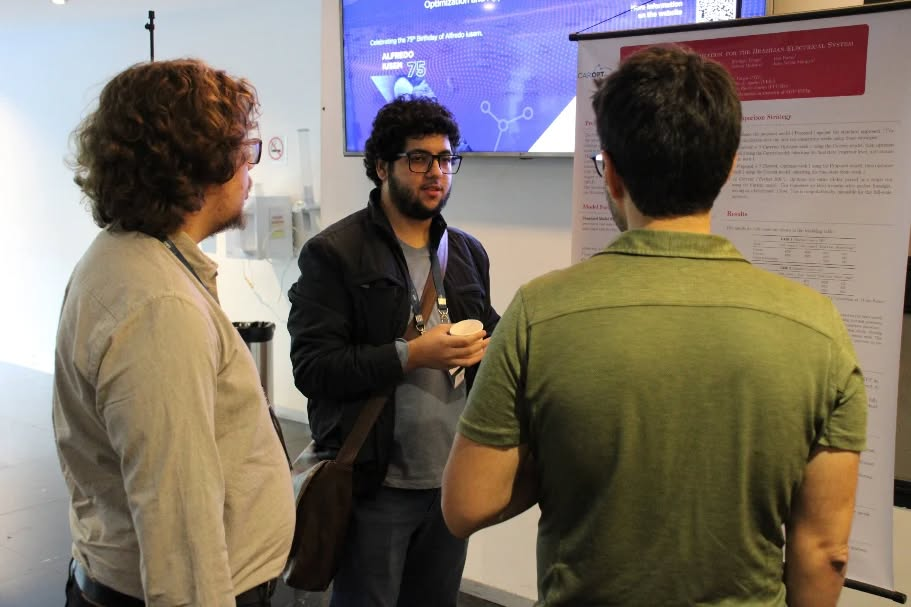

Pesquisa Acadêmica e Desenvolvimento

Foco de Pesquisa e Interesses Acadêmicos
Atualmente desenvolvo pesquisa em duas frentes paralelas:
Doutorado em Matemática Aplicada (FGV/EMAp). Orientação do Prof. Bernardo Freitas Paulo da Costa. Investigo métodos de otimização estocástica para o planejamento da operação do sistema elétrico brasileiro, focado no acoplamento entre os modelos oficiais NEWAVE (médio/longo prazo) e DECOMP (curto/médio prazo) usados pelo ONS, e em variantes da Programação Dinâmica Dual Estocástica (SDDP) para tratar dimensionalidade e seleção de cortes na aproximação da função de valor. Defesa prevista para 2028.
Mestrado em Engenharia de Sistemas e Computação (PESC/COPPE/UFRJ). Orientação do Prof. Adriano Maurício de Almeida Cortês, D.Sc. Minha dissertação traça o desenvolvimento técnico dos modelos generativos modernos sob a ótica unificadora do Transporte Ótimo: parte de Monge/Kantorovich e Benamou-Brenier, percorre Normalizing Flows, Continuous Normalizing Flows (Neural ODE, FFJORD, OT-Flow), modelos baseados em score e difusão (DDPM, Score SDE), e culmina em Flow Matching — mostrando como cada geração endereça as limitações da anterior, com OT como fio condutor. Defesa prevista para Dezembro 2026.
Meus interesses acadêmicos de aplicação incluem, mas não se limitam a:
- Otimização Estocástica e Pesquisa Operacional: SDDP/EDDP, métodos de decomposição, controle ótimo, aplicações no setor elétrico (despacho hidrotérmico, planejamento energético) e em finanças quantitativas.
- Modelos Generativos e Aprendizado Profundo: Normalizing Flows, Continuous Normalizing Flows, score matching, modelos de difusão, Flow Matching, e suas conexões com Transporte Ótimo.
- Engenharia de Agentes de IA: Pipelines multi-agente para automação do ciclo de desenvolvimento de software, guardrails, RAG, AST mapping em codebases de larga escala.
- Computação Científica: Desenvolvimento e aplicação de métodos computacionais para resolver problemas em diversas áreas da matemática aplicada — métodos numéricos para EDOs/EDPs, dinâmica dos fluidos computacional (CFD).
Publicações e Trabalhos Técnicos
Principais contribuições acadêmicas e técnicas:
-
"Data-driven diffusion-based super-resolution applied to Rayleigh-Bénard convection." (Apresentado em conferência, CILAMCE 2024 - trabalho derivado da pesquisa no NACAD/UFRJ)
Co-autores: R. Velho, G. Barros, A. Cortes, F. Rochinha, A. Coutinho, Ruan Felipe da Silva e Sousa, et al. -
"Boundary Conditions for Hydrothermal Operation Planning Problems: The Infinite Horizon Approach." (Apresentado em conferência, CNMAC 2024 - trabalho derivado da Iniciação Científica no IM/UFRJ)
Co-autores: B. F. P. da Costa, A. Calixto, R. T. Figueiredo, D. D. Penna, Ruan Felipe da Silva e Sousa, et al. -
"Otimização Estocástica em Horizonte Periódico." (Trabalho técnico/Relatório, 2022)
Co-autores: B. F. P. da Costa, A. Calixto, R. T. Figueiredo, D. D. Penna, Ruan Felipe da Silva e Sousa, et al.
Perfil no ResearchGate: Ruan F S Sousa (confirme o link).
Perfil no LinkedIn (para uma visão completa, incluindo experiência profissional): Perfil LinkedIn
Participação em Eventos Acadêmicos
- XLV Congresso Ibero-Latino Americano de Métodos Computacionais em Engenharia (CILAMCE 2024).
- Congresso Nacional de Matemática Aplicada e Computacional (CNMAC 2024).
- 1º Workshop Matemática na Indústria (Fundação Getulio Vargas - FGV, Janeiro de 2024) - Foco em Planejamento Energético Diário.
- 9° Workshop de Soluções Matemáticas para Problemas Industriais (CeMEAI-USP, Fevereiro de 2023) - Foco em Planejamento Energético e Restrições Ambientais.
Projetos de Pesquisa Acadêmica
-
Pesquisa de Doutorado: Otimização Estocástica para Sistemas de Energia (Atual)
Doutorando em Matemática Aplicada na FGV/EMAp (Orientador: Prof. Bernardo Freitas Paulo da Costa)
Investigação de métodos SDDP/EDDP para o planejamento hidrotérmico brasileiro, com foco no acoplamento entre os modelos NEWAVE e DECOMP usados pelo ONS, seleção de cortes na aproximação da função de valor e extensões multidimensionais. -
Pesquisa de Mestrado: Trajetória de Modelos Generativos Modernos (Atual)
Mestrando no PESC/COPPE/UFRJ (Orientador: Prof. Adriano Maurício de Almeida Cortês, D.Sc.)
Dissertação "Trajetória de Modelos Generativos Modernos: De Normalizing Flows a Flow Matching". Implementação dos modelos canônicos em PyTorch (companion code:mestrado-code) com avaliação reprodutível em datasets 2D, UCI tabular, MNIST e CIFAR-10. Foco teórico em formulações de Transporte Ótimo — em particular o framework dinâmico de Benamou-Brenier e sua conexão direta com Flow Matching. -
Modelos Difusivos de Super-Resolução para CFD (NACAD/UFRJ, 2024 – 2025)
Aluno Bolsista no NACAD/UFRJ
Desenvolvimento de modelos difusivos de super-resolução para aprimorar resultados de modelos de ordem reduzida em dinâmica dos fluidos. Trabalho derivado em publicação no CILAMCE 2024. -
Pesquisa e Desenvolvimento em Sistemas de Tábuas Biométricas (Fevereiro 2023 - Fevereiro 2024)
Aluno de Iniciação Científica no LabMA/UFRJ (Orientador: Prof. Milton Ramirez)
Atuação na pesquisa e manutenção dos sistemas de cálculos das tábuas biométricas (BR-EMS). Desenvolvimento de ferramentas em Python para limpeza e análise de dados de seguradoras e otimização de processos em banco de dados Oracle. -
Otimização Estocástica para o Setor Elétrico Brasileiro (Março 2022 - Janeiro 2023)
Aluno de Iniciação Científica no Instituto de Matemática/UFRJ (Orientador: Prof. Bernardo Freitas Paulo da Costa)
Aplicação de métodos de otimização estocástica (SDDP.jl, JuMP.jl em Julia) para modelar e solucionar o problema de despacho hídrico-térmico, em colaboração com o ONS.